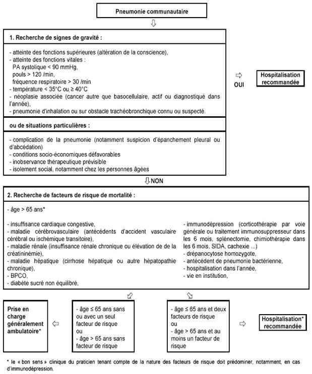
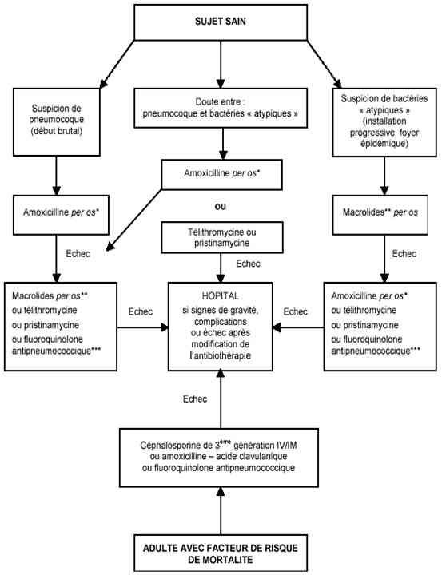
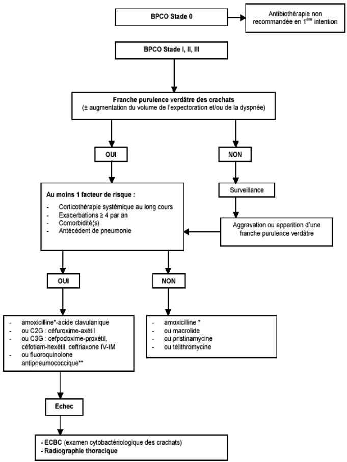

Bienvenue Sur Medical Education
Pneumopathies aiguës communautaires
Spécialité : infectieux / pneumologie /
Points importants
- Infections aiguës du parenchyme pulmonaire acquises en ville ou dans les 48h après hospitalisation
- Pathologie infectieuse la plus courante (400 à 600 000 cas / an en France)
- Pneumonies 5 à 10% des infections respiratoires basses
- Pronostic (6e cause de mortalité aux Etats Unis : 5,1% en ambulatoire, 13,6% hospitalisation, 36,5% en réanimation)
- Taux de mortalité = 30% dépendant agent infectieux (virulence de certains germes = Klebsiella et Legionella) et terrain sous jacent
- Chez les personnes âgées, symptomatologie fréquente et trompeuse et morbi-mortalité plus grande
- Différenciation avec pneumopathie nosocomiale (> 48h d'hospitalisation et 15 jours dernière hospitalisation)
- 60 à 80% des pneumopathies ont une origine bactérienne - prédominance du pneumocoque
-
Vaccination anti-grippale et pneumo 23 probablement protecteurs
Présentation clinique / CIMU
SIGNES FONCTIONNELS
Généraux
- Fièvre ou hypothermie
- Sueurs
- Céphalées
- Malaise
- Myalgies , arthralgies
- Mal de gorge, rhume
- Douleur abdominale
- Anorexie, perte de poids
Signes de gravité
- Détresse respiratoire
- Choc septique
- Troubles de la conscience / confusion
Spécifiques
- Fièvre
- Toux
Signes de complications
- Dyspnée repos / d'effort
- Douleur thoracique pleurale (phase de consolidation)
- Sifflement
- Décompensation comorbidités préexistantes = tableau d'insuffisance cardiaque globale, gauche, convulsion, pré-DT, délirium tremens
Signes d'étiologies
- PAC typique = toux productive
- PAC atypique = toux sèche - signes extra-pulmonaires associés
CONTEXTE
Terrain
- Sex ratio = 1
- L'incidence augmente avec âge
Traitement
- Récent = antibiothérapie (dose / durée / motif)
- Au long cours = corticothérapie au long cours, diabète, immunosuppresseurs, chimiothérapie, traitements cardiotrope / insuffisance respiratoire chronique
- Allergique = pénicilline, β-lactamines
Antécédents
- Toxicomane (injection IV)
- Antécédents récents = pneumonie, infection virale récente
- Vaccination anti-grippale, pneumo 23
- Allergie pénicilline
- Co-morbidités (score de Fine) = maladies néoplasique, hépatique, cérébro-vasculaire, rénale, insuffisance cardiaque congestive
Facteurs de risque
- Age > 65 ans
- Pathologies respiratoires chroniques (BPCO, asthme, tuberculose)
- Co-morbidités (diabète, insuffisance cardiaque, insuffisance rénale, hépatopathie chronique)
- Immunodépression (corticothérapie au long cours, néoplasie)
- Mauvaise hygiène bucco-dentaire / desmondite chronique
- Alcoolisme
- Tabagisme actif
- Troubles de la déglutition
- Dénutrition
-
Institutionnalisation, hospitalisation il y a moins de 6 mois :
- très grand âge
- BPCO et autres pathologies respiratoires
- troubles de la déglutition : démences, séquelles d'AVC, maladie de Parkinson
- sonde de nutrition entérale, alitement et mauvaise installation pour repas
- parodonthopathies et mauvais état bucco-dentaire
- diabète, dénutrition
- autonomie réduite, escarres
- médicaments : anticholinergiques, psychotropes, antibiotiques au cours du mois précédent, antisécrétoires gastriques, corticoïdes
- absence de vaccination antipneumococcique
Circonstances de survenue
- Infection virale récente en particulier ORL
- Séjour / voyage récent = bassins de balnéothérapie, eaux thermales (Legionella pneumophila)
- Contexte épidémique = hiver, début printemps (Haemophilus influenzae)
- Institution
- Environnementale (précarité)
- Exposition à eau en aérosol contaminé = réseaux eau chaude sanitaire, tours aéro-réfrigérantes (Legionella pneumophila)
EXAMEN CLINIQUE
Généraux
- Vomissements, perte d'appétit (chez la personne âgée+)
- Nuque souple
Signes de gravité
- Fièvre > 40°C ou < 36°C
- Signes de détresse respiratoire : FR > 30/min
- FC > 120/min
- Sepsis / choc septique
- Troubles de la conscience / confusion (hypoperfusion cérébrale)
Spécifiques
- Auscultation pulmonaire = foyer de crépitants unilatéral au niveau d'un lobe ou segment (valeur prédictive positive), souffle tubaire
Signes de complications
- Locale = diminution du murmure vésiculaire / matité à la percussion (pleurésie)
-
En fonction du terrain, décompensation d'une comorbidité :
- signes gauche / droit surajoutés (cardiopathie)
- bruits du coeur irréguliers (cardiopathie)
- sibilants auscultatoires (insuffisant respiratoire chronique / asthme)
- signes d'encéphalopathie hypercapnique (BPCO)
- syndrome de pré-DT - DT (éthylique chronique)
- convulsion (éthylique chronique)
-
En rapport avec le germe :
- confusion / méningisme (Streptococcus pneumoniae)
- signes neurologiques = céphalées, troubles de la conscience, myalgies (Legionnella pneumophila)
- signes neurologiques focaux = encéphalite (Mycoplasma pneumoniae, C. burnetti, Legionnella pneumophila)
- ataxie cérébelleuse, érythème multiforme (Chlamydia pneumoniae, M. tuberculosis)
- érythème gangréneux (Pseudomonas aeruginosa, Serratia marcescens)
- nodules cutanés (Nocardia)
- signes digestifs (douleurs abdominales, nausées, vomissements, diarrhées) (Legionella pneumophila)
- céphalées, otalgies, myalgies, arthralgies, érythème Stevens Johnson (Mycoplasma pneumoniae)
Signes en rapport avec le terrain
- Personne âgée, institutionnalisée = état des fonctions supérieures, dénutrition / cachexie / grabatisation
- Antécédents d'accident vasculaire neurologique = recherche de présence de réflexe de déglutition
- Séquelles d'accident vasculaire neurologique = hémiplégie, troubles de la parole
Signes étiologiques
- En fonction du terrain
- Asthmatique, BPCO, tabagique, immunodéprimés = à facteur de risque pour Haemophilus influenzae
- Ethylique chronique, diabétique, BPCO = facteur de risque pour Klebsiella
- Toxicomane IV, terrain débilité (personne âgée, institutionnalisée) = Staphylococcus aureus
- Contexte épidémique ou « situation à risque » = voyages, thermes, exposition à eau en aérosol contaminé (Legionella pneumophila)
- Patients débilités - âge > 75 ans, immunodéprimé, hospitalisés récemment ou institutionnalisés = BGN bacilles gram-négatifs (Escherichia coli, Pseudomonas, Enterobacter, Serratia)
-
PAC à germes typiques, en fonction de la coloration des expectorations :
- rouge, rouille (pneumocoque)
- vert (Haemophilus, variétés de pneumocoques) - pathognomonique chez le BPCO
- malodorante (Klebsiella, variétés de pneumocoques)
-
PAC, en fonction des tableaux :
- germes typiques (Streptococcus pneumoniae) = tableau brutal aigu avec des signes d'AEG, fièvre élevée dès le premier jour et douleur pleurale associée
- germes atypiques = tableau progressif en 2, 3 jours avec fièvre modérée qui s'élève progressivement, présence de signes ORL et extra-pulmonaires
Au total
-
Forme typique (PFLA) :
- début brutal
- toux avec expectoration purulente ou hémoptoïque
- douleur thoracique
- fièvre élevée avec frissons apparue en < 48h
- syndrome de condensation alvéolaire
-
Pneumopathie atypique :
- discordance entre signes fonctionnels et signes physiques
- installation progressive
- contexte épidémique
- signes extra-thoraciques
- En réalité clinique beaucoup moins tranchée
EXAMENS PARACLINIQUES SIMPLES
- Systématique, SpO2 associée à une FR = recherche hypoxémie (SpO2 < 95%)
-
En fonction du terrain :
- ECG, en cas de malaise, palpitations
- glycémie capillaire chez le diabétique (éliminer une décompensation diabètique)
CIMU
3 situations cliniques
- Situation A = signes de détresse respiratoire et/ou sepsis / choc septique
- Situation B = signes d'hypoxémie
- Situation C = absence de signes d'hypoxémie
Tri
- Situation A = tri 1-2
- Situation B = tri 3
-
Situation C = tri 4
Signes paracliniques
- Situation A = signes de détresse respiratoire et/ou sepsis / choc septique
- Situation B = signes d'hypoxémie
- Situation C = absence de signes d'hypoxémie
Critères pour score de Fine
BIOLOGIQUE
Situation A
- NFS (hyperleucocytose - normalité des globules blancs en particulier chez la personne âgée - leucopénie en cas de sepsis sévère - hématocrite < 30%) / plaquettes (hyperplaquettose)
- TP / TCA (éliminer une CIVD)
- Ionogramme sanguin (hyponatrémie sur SIADH) - urée - créatinine (insuffisance rénale aiguë/ chronique)
- CRP (élévation = sévérité de l'infection) +/- procalcitonine (élévation = évocateur de cause bactérienne)
- Lactates (hyperlactatémie)
- Hémocultures x 2 à 20 min d'intervalle (pour diagnostic bactériologique, cependant positif dans 40% des cas)
- ECBC (ne doit pas retarder la mise en route du traitement)
- Antigènes urinaires = pneumocoque et Legionella pneumophila
- Bilan hépatique - CPK (cytolyse hépatique et élévation des CPK évocateur de légionellose)
- GDS à l'air ambiant (hypoxémie - éliminer acidose)
-
Selon les tableaux cliniques :
- confusion - signes de localisation neurologiques, discuter l'urgence d'une PL
- épanchement pleural, ponction pleurale exploratrice et antalgique
Situation B
- NFS (hyperleucocytose - normalité des globules blancs en particulier chez la personne âgée - leucopénie en cas étiologie virale - hématocrite < 30%) / plaquettes (hyperplaquettose)
- Ionogramme sanguin (hyponatrémie sur SIADH) - urée - créatinine (insuffisance rénale aiguë / chronique)
- CRP (élévation = sévérité infection) +/- procalcitonine (élévation évocateur cause bactérienne)
- Bilan hépatique - CPK (cytolyse hépatique et élévation CPK évocateur légionellose)
- Hémocultures x 2 en cas de pic fébrile - frissons
- ECBC non obligatoire (faux négatifs et faux positifs)
- GDS à l'air ambiant (hypoxémie - éliminer acidose)
-
Selon les terrains et tableaux cliniques :
- chez la personne âgée > 75 ans, BU +/- ECBU
- confusion - signes de localisation neurologiques, discuter l'urgence d'une PL
- épanchement pleural, ponction pleurale exploratrice et antalgique
Situation C = pas de biologie
IMAGERIE
Situations A, B, C
-
Radiographie pulmonaire de face + profil (debout, au minimum, assis) :
- opacité segmentaire ou lobaire avec bronchogramme aérique (Streptococcus pneumoniae)
- opacité focale (segmentaire ou lobaire) (Streptococcus pneumoniae, Mycoplasma pneumoniae, Legionnella pneumophila, Staphylococcus aureus, Chlamydia pneumoniae)
- cavitation associée à un épanchement pleural (Staphylococcus aureus, BGN, germes anaérobies, tuberculose)
- atteinte des champs pulmonaires basaux / inférieurs (Legionella pneumophila), supérieurs (Klebsiella)
- syndrome interstitiel réticulo-nodulaire ou réticulaire (Mycoplasma pneumoniae)
-
opacités lobaires ou segmentaires bilatérales (Staphylococcus aureus, Legionella pneumophila, Streptococcus pneumoniae)
Diagnostic étiologique
Germes fréquents
-
Germes typiques :
- Streptococcus pneumoniae, 30 à 47% (quand diagnostic microbiologique fait)
- Haemophilus influenzae 5,5 à 22%
-
Germes atypiques :
- Legionnella pneumophilia (5 à 15%)
- Mycoplasma pneumoniae (7,4 à 12% jusqu'à 23%)
- Chlamydia pneumoniae (5 à 10%)
- Virus (10 à 30%)
- Autres < 5% :
- Staphylococcus aureus
- entérobactéries (E. coli, Klebsiella, Entérobacter, Pseudomonas aeruginosa, Serratia)
- Associations fréquentes
- Agent causal méconnu dans 25 - 50% des cas
Fonction du terrain
- BPCO : H. Influenzae (légionelle), Branhamella catarrhalis
- Sujets âgés : BGN, staphylocoque (post-grippal), anaérobies (inhalation)
- Ethylique : pneumocoque (gravité), BGN (Klebsielle), légionelle, anaérobies (troubles de la déglutition, état bucco-dentaire)
- Immunodéprimés : pneumocoque, H. influenzae (légionelle), staphylocoque, BGN, pyogène
-
Vie en institution : association de germes
Diagnostic différentiel
Infections des voies respiratoires hautes
- Epiglottite
- Corps étranger intra-trachéal
Autres infections des voies respiratoires basses
- Bronchite = auscultation pulmonaire normale ou râles bronchiques
- Décompensation aiguë d'une insuffisance respiratoire ventilatoire (BPCO / asthme) = caractère purulent des expectorations
A évoquer en fonction de l'évolution clinique ou éléments cliniques associés
- Pathologies broncho-pulmonaires = embolie pulmonaire, infarctus pulmonaire surinfecté, néoplasie broncho-pulmonaire, tuberculose
- 1re manifestation pulmonaire d'une immunodépression non connue = pneumonie à Pneumocystis carinii (HIV)
Autres étiologies d'atteintes pulmonaires
- Pneumonies médicamenteuses
- Pathologie alvéolo-interstitielle immuno-allergique
- Abcès pulmonaire
- Empyème
- Vascularite
- Bronchiolite Oblitérante Organisée en Pneumonie BOOP
Autres étiologies en fonction du terrain (personne âgée +++)
- Pyélonéphrite
- Méningite
-
Pathologies digestives fébriles chirurgicales
Traitement
Situation A = signes de détresse respiratoire et/ou sepsis / choc septique
Situation B = signes d'hypoxémie
Situation C = absence de signes d'hypoxémie
STABILISATION INITIALE
Situation A
- Oxygénothérapie = objectifs = SaO2 > 92%
- Moyens = ventilation conventionnelle (lunettes, masque)
-
En cas de persistance d'une hypoxémie et/ou d'apparition d'une acidose :
- ventilation non invasive (CPAP - BiPAP)
- ventilation mécanique
- Remplissage vasculaire
- Correction des troubles hydroélectrolytiques et des décompensations de comorbidités (diabète, insuffisances cardiaque / respiratoire)
- Antipyrétiques paracétamol 1g IV
-
Traitement spécifique = bi / tri-antibiothérapie probabiliste précoce après les hémocultures, en fonction du terrain :
-
sujets jeunes (< 50 ans) sans facteur de risque :
- C3G céfotaxime 1 à 2 g IV ou ceftriaxone 1 à 2 g IV en 5 à 15 min (traitement quotidien = 1 à 2 g)
- + macrolides spiramycine 1,5 M UI IVL en 1 heure (traitement quotidien = 1,5 MUI x 3) ou érythromycine 1 g en IVL en 1 heure (traitement quotidien = 1 g x 2)
- ou fluoroquinolones lévofloxacine 500 mg en IVL en 1 heure (traitement quotidien = 500 mg x 2)
-
sujets âgés (> 65 ans) sans facteur de risque :
- C3G céfotaxime 1 à 2 g IV ou ceftriaxone 1 à 2 g IV en 5 à 15 min (traitement quotidien = 1 à 2 g)
- + fluoroquinolones lévofloxacine 500mg en IV en 1 heure (traitement quotidien = 500 mg x 2)
-
sujets avec présence d'au moins un facteur de risque :
- C3G céfotaxime 1 à 2 g IV ou ceftriaxone 1 à 2 g IV en 5 à 15 min (traitement quotidien = 1 à 2 g)
- + fluoroquinolones lévofloxacine 500 mg en IV en 1 heure (traitement quotidien = 500 mg x 2) + macrolides spiramycine 1,5 MUI IVL en 1 heure (traitement quotidien = 1,5 UI x 3)
- les infections à Legionella pneumophila doivent être mises sous bi-antibiothérapie si présence de critères de gravité
-
sujets avec présence d'au moins un facteur de risque = si suspicion de pyocyanique (Pseudomonas aeruginosa) :
- uréïdopénicilline pipéracilline - tazobactam 4g en IV en 30 min (traitement quotidien = 4 g x 3)
- ou céphalosporine cefépime 2 g en IV en 3 à 5 min (traitement quotidien = 2 g x 2)
- ou carbapénèmes imipenème 1 g en IV en 40 à 60 min (traitement quotidien = 1 g x 3)
- + aminosides amikacine 15 mg/kg/jour en 3 injections
- + macrolides spiramycine 1,5 MUI IV en 1 h (traitement quotidien = 1,5 MUI x 3) ou érythromycine 1 g en IV en 1 h (traitement quotidien = 1 g x 2)
- ou fluoroquinolones lévofloxacine 500 mg en IV en 1 h (traitement quotidien = 500 mg x 2)
-
sujets jeunes (< 50 ans) sans facteur de risque :
Situation B
- Oxygénothérapie = objectifs = SaO2 > 92%
- Moyens = ventilation conventionnelle (lunettes, masque)
- Remplissage vasculaire
- Corrections des troubles hydroélectrolytiques et des décompensations de comorbidités (diabète, insuffisances cardiaque / respiratoire)
- Antipyrétiques paracétamol 1 g IV
-
Traitement spécifique = antibiothérapie probabiliste précoce après les hémocultures, selon le terrain et germe :
-
sujets jeunes (< 50 ans) sans facteur de risque :
- en faveur du pneumocoque, aminopénicillines amoxicilline 1 g en IV en 30 à 60 min (traitement quotidien 1 g x 3)
- pas d'argument pour un pneumocoque : aminopénicillines amoxicilline 1 g en IV en 30 à 60 min (traitement quotidien 1 g x 3) et macrolides télithromycine 400 mg PO (traitement quotidien 400 mg x 2)
-
sujets âgés (> 65 ans) sans facteur de risque :
- en faveur pneumocoque : aminopénicillines amoxicilline 1 g en IV en 30 à 60 min (traitement quotidien 1 g x 3)
- pas d'argument pour pneumocoque : aminopénicillines amoxicilline 1g en IV en 30 à 60 min (traitement quotidien 1 g x 3) ou C3G céfotaxime 1 à 2 g IV en 5 à 15 min (traitement quotidien = 1 à 2 g) ou C3G ceftriaxone 1 à 2g IV en 5 à 15 min (traitement quotidien = 1 à 2g) ET macrolides spiramycine 1,5 MUI IV en 1 h (traitement quotidien = 1,5 MUI x 3) ou érythromycine ou fluoroquinolones moxifloxacine 400mg PO (traitement quotidien 400mg x 2)
-
sujets âgés avec présence d'au moins un facteur de risque :
- en faveur d'un pneumocoque : aminopénicillines amoxicilline 1 g en IV en 30 à 60 min
- pas d'argument pour un pneumocoque : aminopénicillines amoxicilline 1 g en IV en 30 à 60 min (traitement quotidien 1 g x 3) ou C3G céfotaxime 1 à 2 g IV en 5 à 15 min (traitement quotidien 1 à 2 g) ou C3G ceftriaxone 1 à 2 g IV en 5 à 15 min (traitement quotidien 1 à 2 g) ET fluoroquinolones lévofloxacine 500 mg en IV en 1 h (traitement quotidien 500 mg x 2) ou fluoroquinolones moxifloxacine 400 mg PO (traitement quotidien 400 mg x 2)
-
sujets jeunes (< 50 ans) sans facteur de risque :
Situation C
- Si fièvre, frissons, antipyrétiques paracétamol 500 mg à 1 g PO
- Traitement antibiotique ambulatoire
SUIVI DU TRAITEMENT
Situation A
- Maintien état respiratoire (SaO2 - FR)
- Autres paramètres vitaux = hémodynamique, diurèse
- En cas de persistance de confusion => ponction lombaire
- Contrôle de l'efficacité de l'oxygénation (PaO2) et/ou décompensation respiratoire (pH) par GDS sous oxygène
- Défervescence thermique à 48h
Situations B
- Maintien état respiratoire (SaO2 - FR)
- Absence d'aggravation paraclinique (hypoxémie / pH) par GDS sous oxygène
- En cas de persistance de confusion => ponction lombaire
- Défervescence thermique à 48h - en cas d'échec = changement d'antibiothérapie
Situation C
- Défervescence thermique à 48h - en cas d'échec => changement d'antibiothérapie
-
Durée du traitement :
- 10 jours pour PAC à germes typiques
- 15 jours pour une pneumopathie atypique
- 3 semaines pour une légionellose
Surveillance
Situation A = signes de détresse respiratoire et/ou sepsis / choc septique
Situation B = signes d'hypoxémie
Situation C = absence de signes d'hypoxémie
CLINIQUE
Situation A
- Fonctions vitales (PA - SaO2 - FR - conscience - diurèse)
- Adaptation des antibiotiques selon antibiogramme
- Défervescence thermique après 48h
Situation B
- Etat respiratoire
- Adaptation des antibiotiques selon antibiogramme
- Défervescence thermique après 48h
- En cas de persistance de fièvre => traitement antibiotique de 2e ligne
NB = résolution de la toux en 8 jours - anomalie auscultatoire en 3 semaines
Situation C
- Défervescence thermique après 48h
- En cas de persistance de fièvre => traitement antibiotique de 2e ligne
NB = résolution de la toux en 8 jours - anomalie auscultatoire en 3 semaines
PARACLINIQUE
Situations A
- Contrôle GDS sous oxygène = contrôle PaO2 - pH
- Diminution des signes biologiques inflammatoires (Globules blancs - CRP)
- Absence de régression clinique = proposer TDM thoracique pour éliminer complications (abcès - cavitation - empyème), +/- suivie d'une fibroscopie bronchique (éliminer un processus néoplasique surtout si contexte = âge > 40 ans, tabagique > 20 PA, aspects radiologiques de condensation rétractile, élargissement médiastinal, masse intraparenchymateuse)
Situation B
- Contrôle GDS sous oxygène = contrôle PaO2 - pH
- Diminution des signes biologiques inflammatoires (leucocytose - CRP)
- Absence de régression des signes biologiques à 48h => proposer un traitement antibiotique de 2ème ligne
- Absence de régression clinique => proposer une fibroscopie bronchique et/ou TDM thoracique
Situation C
- Résolution anomalie radiologique en 4 sem (âge < 50 ans) - 12 sem (> 50 ans ou pathologie respiratoire sous jacent)
-
Contrôle radiographique à 2 mois
Devenir / orientation
Situation A = signes de détresse respiratoire et/ou sepsis / choc septique
Situation B = signes d'hypoxémie
Situation C = absence de signes d'hypoxémie
- Calcul du score de Fine pour orientation
CRITERES D'ADMISSION
Situation A
- Score de Fine 5 : soins intensifs - réanimation - à discuter dans certains cas (comorbidités importantes, grabatisation) avec le réanimateur
Situation B
- Score de Fine 4 : médecine
- Score de Fine 3 : hospitalisation courte 24h - 48h avec réévaluation
CRITERES DE SORTIE
Situation C
- Score de Fine 1 - 2 : traitement ambulatoire
Situation B
- Bonne évolution clinique à 24h - 48h, score de Fine 3
ORDONNANCE DE SORTIE
-
Antibiotiques :
- amoxicilline par voie orale 3 g/j, durée de 7 à 14 j
- macrolides per os si suspicion d'infection à germes atypiques (épidémie, < 40ans)
- Antipyrétiques
RECOMMANDATIONS DE SORTIE
- Consultation par le médecin traitant ou consultation post-urgences à 48h-72 h +++
-
En l'absence d'efficacité :
- « switch » de classe antibiotique
- ou télithromycine
- fluoroquinolone active sur le pneumocoque
- envisager hospitalisation
- En cas de gène respiratoire importante et/ou somnolence et fièvre > 39°C au delà de 48h, reconsulter aux Urgences
- Proposer une consultation par un tabacologue +/- alcoologue pour sevrage
- Consultation de stomatologie / dentiste en cas de mauvaise hygiène dentaire
-
Remise à jour du statut vaccinal :
- pneumo 23, tous les 5 ans - chez les sujets à risque (splénectomisé, drépanocytaire homozygote, syndrome néphrotique, insuffisants respiratoires, éthylique chronique, insuffisant cardiaque, infection pulmonaire)
-
antigrippal, tous les ans = personne âgée, institutionnalisée, présence de comorbidités
Mécanisme / description
Mécanismes d'infection
- Inhalation d'un aérosol bactérien (PAC)
- Bactériémie
- Contiguïté anatomique
- Aspiration des bactéries oropharyngées (infections nosocomiales)
PAC lobaire typique
- Atteinte totale ou partielle lobaire
-
Exemple du S. pneumoniae :
- S. pneumoniae dans nasopharynx, asymptomatique chez 50% de la population saine
- maladie invasive, virale (comme la grippe) modifie l'acquisition d'un nouveau sérotype d'épithélium ; l'infection virale augmente l'attachement du pneumocoque aux récepteurs de l'épithélium respiratoire
- passage du nasopharynx à l'alvéole puis infection alvéolaire par pneumocoque ; multiplication du pneumocoque dans l'alvéole et invasion de l'épithélium alvéolaire de proche en proche
- réaction d'inflammation et de consolidation lobaire
PAC atypique
- Atteinte plurifocale, bilatérale, homogène, prédominant aux bases
- Aspiration ou inhalation d'un organisme atypique sur cellules de l'épithélium respiratoire
- Présence de pili à la surface de ses espèces (Legionella) facilitent l'attachement
-
Destruction locale des cellules épithéliales par germes et mécanisme de médiation immunitaire avec propagation diffuse et multilobaire
Algorithme
- Algorithme PAC
 _749 Algorithme Algorithme : pneumonie communautaire aiguë
- Algorithme : stratégie thérapeutique ambulatoire
 _750 Algorithme Algorithme : stratégie thérapeutique ambulatoire
- Algorithme : stratégie antibiotique ambulatoire au cours d’une exacerbation de BPCO
 _751 Algorithme Algorithme : stratégie antibiotique ambulatoire au cours d'une exacerbation de BPCO
Bibliographie
- Prise en charge des infections des voies respiratoires basses de l'adulte immunocompétent - 15ème Conférence de consensus en thérapeutique anti-infectieuse, SPILF, Mars 2006
- Antibiothérapie par voie générale en pratique courante au cours des infections respiratoires basses de l'enfant et de l'adulte, recommandations AFSSAPS, Octobre 2005
- Fine MJ et al - A prediction rule to identify low risk patients with community-acquired pneumonia. N Engl J Med 1997; 336, 243- 50
- Burke A Cunha - Pneumonia, Community-Acquired, 2009 - http://www.emedicine.com
- Sat Sharma - Pneumonia, bacterial, 2007 - http://www.emedicine.com
- James M. Stephen - Pneumonia, bacterial, 2008- http://www.emedicine.com
- Mouniemné H, Andrémont A. - Physiopathologie des pneumopathies aiguës communautaires : le modèle des pneumopathies à . pneumocoque - volume 5, n°10, décembre 1999, INIST / CNRS
- Der Sahakian G, Allo JC - Pneumopathie aigue communautaire, 2005 http://www.urgences-serveur.fr
- Pourriat JL - Pneumopathies communautaires, 2003 http://www.urgences-serveur.fr
Auteur(s) : Albéric GAYET, Thomas TARJUS